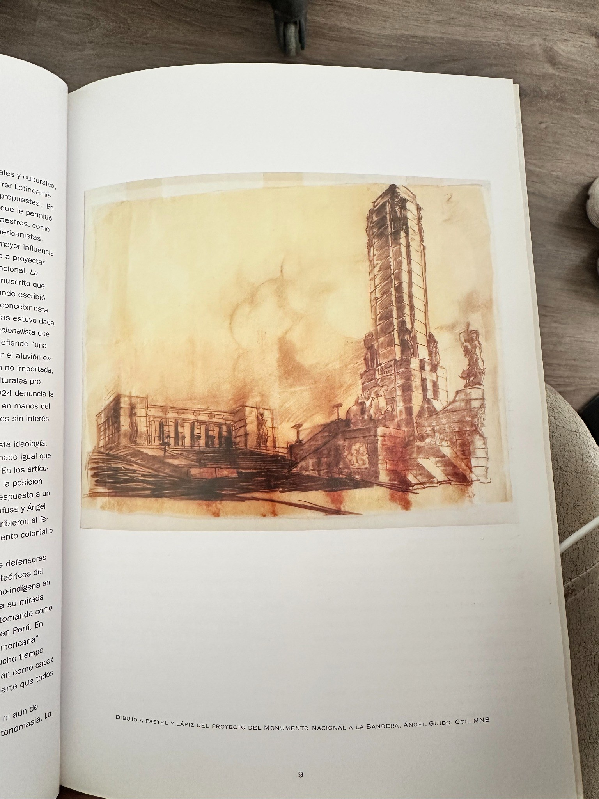
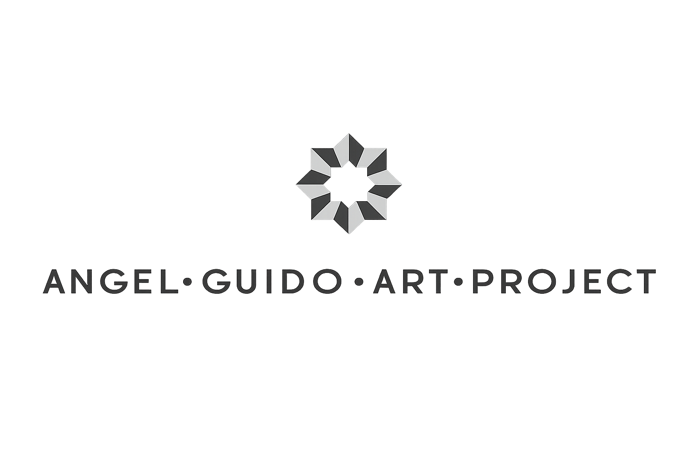
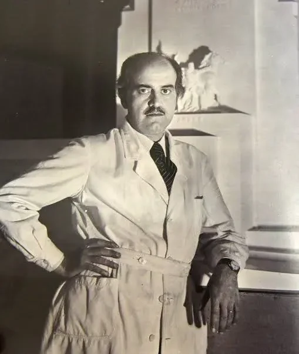
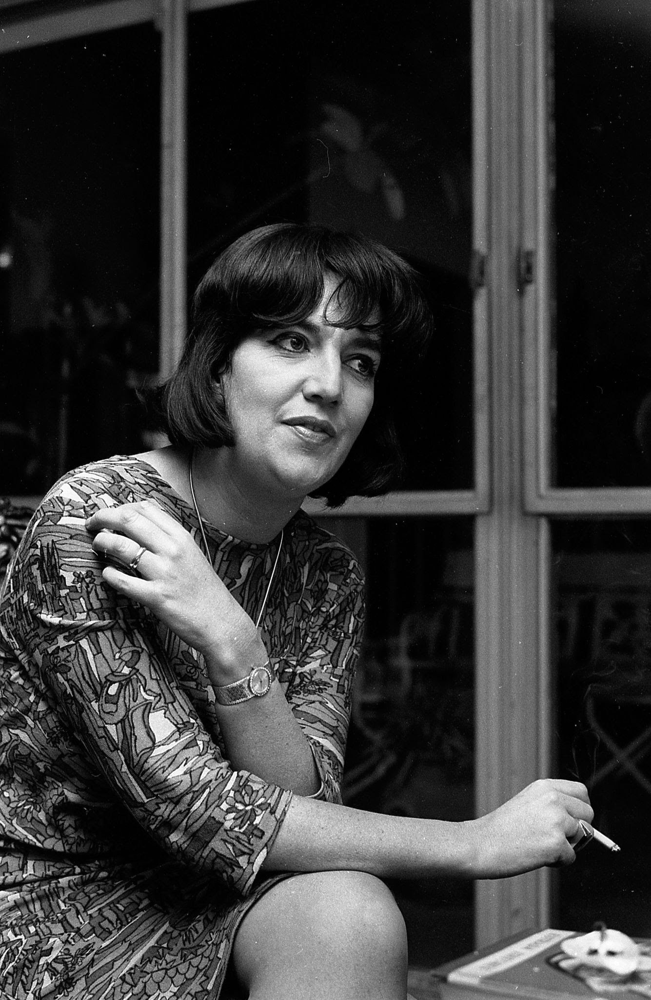
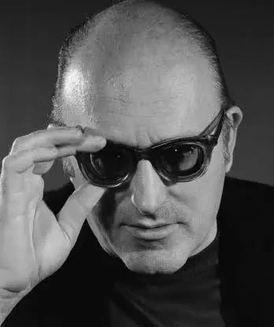
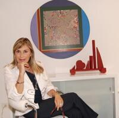
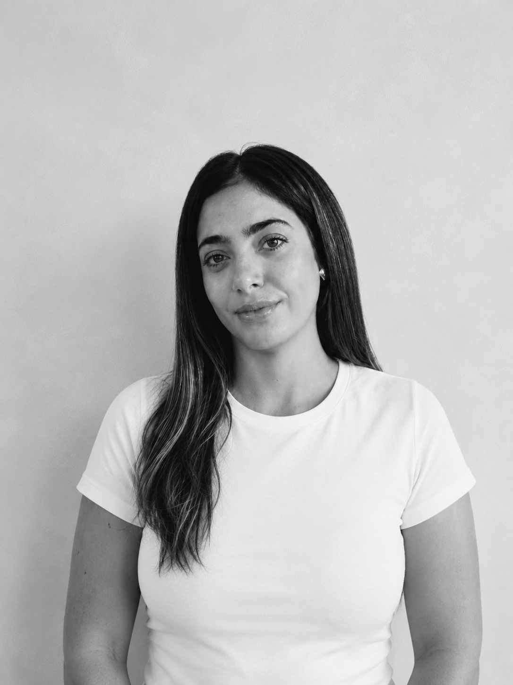

Archivo



Arquitectura, literatura, cine, artes visuales y patrimonio cultural reunidos en un único archivo digital.
Desde 2008, Angel Guido Art Project preserva el legado artístico e intelectual de la familia Guido. Hoy inicia una nueva etapa mediante la transformación digital de su archivo, poniendo a disposición documentos, obras y memorias para investigadores y nuevas generaciones.

Arquitecto del Monumento Nacional a la Bandera y una de las figuras más relevantes de la arquitectura argentina del siglo XX.
Novelista y guionista. Una de las grandes voces de la literatura argentina.


Pionero del cine moderno argentino y referente internacional.
Impulsora del Angel Guido Art Project y responsable de la preservación del archivo desde 2008.


Lidera la transformación digital del archivo familiar para acercar este legado a nuevas generaciones.
